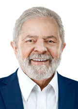

Luís Inacio Lula da Silva |
|---|
|  |
Nascimento:27/10/1945 (76 anos) |
Nacionalidade:Brasileiro |
Cônjude:Maria de Lourdes (1969 - 1971) |
Partido:Partido dos Trabalhadores (PT) |
Filhos Marcos Cláudio (1971) |
Profissões:Metalúrgico, Sindicalista e Político |
É um ex-sindicalista, ex-metalúrgico e político brasileiro, filiado ao Partido dos Trabalhadores. Foi o 35.º presidente do Brasil entre 1 de janeiro de 2003 e 1 de janeiro de 2011.
Posições e planos políticos
Principais Notícias
próximos eventos
Não há eventos no momento